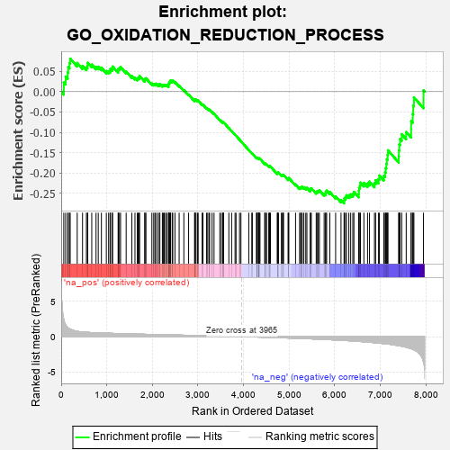
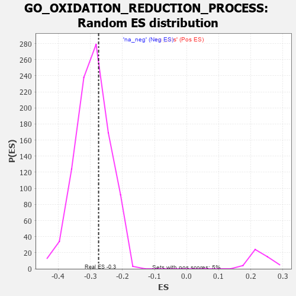

| | | Dataset | 7d |
| Phenotype | NoPhenotypeAvailable |
| Upregulated in class | na_neg |
| GeneSet | GO_OXIDATION_REDUCTION_PROCESS |
| Enrichment Score (ES) | -0.27434355 |
| Normalized Enrichment Score (NES) | -0.93710214 |
| Nominal p-value | 0.63130254 |
| FDR q-value | 0.91517687 |
| FWER p-Value | 1.0 |
Table: GSEA Results Summary

Fig 1: Enrichment plot: GO_OXIDATION_REDUCTION_PROCESS
Profile of the Running ES Score & Positions of GeneSet Members on the Rank Ordered List
| PROBE | GENE SYMBOL | GENE_TITLE | RANK IN GENE LIST | RANK METRIC SCORE | RUNNING ES | CORE ENRICHMENT | | 1 | MC4R | | | 57 | 2.491 | 0.0225 | No |
| 2 | IRS1 | | | 98 | 1.659 | 0.0372 | No |
| 3 | TKT | | | 143 | 1.309 | 0.0472 | No |
| 4 | MTRR | | | 154 | 1.217 | 0.0604 | No |
| 5 | PYGB | | | 183 | 1.114 | 0.0701 | No |
| 6 | LDHB | | | 197 | 1.075 | 0.0813 | No |
| 7 | GSK3A | | | 351 | 0.745 | 0.0706 | No |
| 8 | SUOX | | | 468 | 0.651 | 0.0635 | No |
| 9 | JMJD6 | | | 553 | 0.613 | 0.0600 | No |
| 10 | APEX1 | | | 577 | 0.604 | 0.0643 | No |
| 11 | CCNB1 | | | 581 | 0.601 | 0.0711 | No |
| 12 | PLOD1 | | | 670 | 0.570 | 0.0666 | No |
| 13 | UGDH | | | 764 | 0.540 | 0.0611 | No |
| 14 | GLRX3 | | | 813 | 0.529 | 0.0613 | No |
| 15 | PYGL | | | 882 | 0.510 | 0.0587 | No |
| 16 | COX10 | | | 990 | 0.485 | 0.0507 | No |
| 17 | AKT1 | | | 1040 | 0.476 | 0.0501 | No |
| 18 | AIFM1 | | | 1072 | 0.469 | 0.0517 | No |
| 19 | FOXK2 | | | 1081 | 0.467 | 0.0563 | No |
| 20 | G6PC | | | 1121 | 0.459 | 0.0568 | No |
| 21 | COA6 | | | 1126 | 0.459 | 0.0618 | No |
| 22 | KDM7A | | | 1248 | 0.439 | 0.0515 | No |
| 23 | DUS4L | | | 1254 | 0.438 | 0.0561 | No |
| 24 | LOXL4 | | | 1278 | 0.434 | 0.0583 | No |
| 25 | CCS | | | 1302 | 0.427 | 0.0605 | No |
| 26 | RPE | | | 1425 | 0.405 | 0.0496 | No |
| 27 | QSOX1 | | | 1550 | 0.382 | 0.0383 | No |
| 28 | KDM1B | | | 1618 | 0.371 | 0.0341 | No |
| 29 | ACOX3 | | | 1670 | 0.361 | 0.0319 | No |
| 30 | WWOX | | | 1688 | 0.359 | 0.0340 | No |
| 31 | PLOD3 | | | 1715 | 0.353 | 0.0349 | No |
| 32 | KDM5D | | | 1716 | 0.353 | 0.0391 | No |
| 33 | NOA1 | | | 1832 | 0.332 | 0.0283 | No |
| 34 | MECR | | | 1838 | 0.330 | 0.0316 | No |
| 35 | FOXK1 | | | 1859 | 0.326 | 0.0330 | No |
| 36 | GPX4 | | | 1989 | 0.306 | 0.0201 | No |
| 37 | JMJD4 | | | 2029 | 0.301 | 0.0187 | No |
| 38 | PEX2 | | | 2056 | 0.298 | 0.0189 | No |
| 39 | KDM3A | | | 2078 | 0.294 | 0.0197 | No |
| 40 | DUS1L | | | 2122 | 0.288 | 0.0176 | No |
| 41 | TECR | | | 2156 | 0.284 | 0.0168 | No |
| 42 | PPOX | | | 2164 | 0.282 | 0.0193 | No |
| 43 | TRAP1 | | | 2219 | 0.274 | 0.0156 | No |
| 44 | COX15 | | | 2238 | 0.270 | 0.0165 | No |
| 45 | GNMT | | | 2261 | 0.266 | 0.0169 | No |
| 46 | ECH1 | | | 2290 | 0.261 | 0.0164 | No |
| 47 | ACADS | | | 2316 | 0.258 | 0.0163 | No |
| 48 | OXA1L | | | 2355 | 0.252 | 0.0144 | No |
| 49 | COX7C | | | 2356 | 0.252 | 0.0174 | No |
| 50 | RNLS | | | 2358 | 0.252 | 0.0203 | No |
| 51 | NDOR1 | | | 2372 | 0.250 | 0.0216 | No |
| 52 | FAHD1 | | | 2375 | 0.249 | 0.0244 | No |
| 53 | LBR | | | 2395 | 0.246 | 0.0249 | No |
| 54 | TYW1 | | | 2398 | 0.246 | 0.0275 | No |
| 55 | LYRM7 | | | 2434 | 0.239 | 0.0259 | No |
| 56 | KDM1A | | | 2447 | 0.237 | 0.0272 | No |
| 57 | MSRB3 | | | 2495 | 0.228 | 0.0239 | No |
| 58 | KDM4B | | | 2587 | 0.215 | 0.0148 | No |
| 59 | KDM6A | | | 2690 | 0.200 | 0.0041 | No |
| 60 | ECI2 | | | 2794 | 0.184 | -0.0069 | No |
| 61 | ERO1A | | | 2925 | 0.162 | -0.0217 | No |
| 62 | TAZ | | | 2933 | 0.161 | -0.0207 | No |
| 63 | ETFB | | | 2934 | 0.160 | -0.0187 | No |
| 64 | IDH3A | | | 2956 | 0.157 | -0.0196 | No |
| 65 | ISCU | | | 2989 | 0.151 | -0.0219 | No |
| 66 | TXNL1 | | | 3004 | 0.149 | -0.0219 | No |
| 67 | TIGAR | | | 3091 | 0.138 | -0.0313 | No |
| 68 | GPX1 | | | 3109 | 0.135 | -0.0318 | No |
| 69 | ETFA | | | 3189 | 0.123 | -0.0405 | No |
| 70 | PRDX4 | | | 3214 | 0.120 | -0.0421 | No |
| 71 | FADS1 | | | 3242 | 0.114 | -0.0442 | No |
| 72 | COX11 | | | 3256 | 0.113 | -0.0446 | No |
| 73 | TYW5 | | | 3309 | 0.104 | -0.0500 | No |
| 74 | ILVBL | | | 3352 | 0.097 | -0.0542 | No |
| 75 | LDHA | | | 3479 | 0.080 | -0.0694 | No |
| 76 | PDIA6 | | | 3512 | 0.075 | -0.0726 | No |
| 77 | PRDX5 | | | 3547 | 0.068 | -0.0762 | No |
| 78 | HSDL2 | | | 3552 | 0.067 | -0.0759 | No |
| 79 | TTC19 | | | 3555 | 0.066 | -0.0754 | No |
| 80 | SURF1 | | | 3558 | 0.066 | -0.0748 | No |
| 81 | ABCD1 | | | 3677 | 0.047 | -0.0894 | No |
| 82 | COX5A | | | 3738 | 0.036 | -0.0967 | No |
| 83 | RPIA | | | 3813 | 0.026 | -0.1059 | No |
| 84 | KDM5C | | | 3835 | 0.022 | -0.1083 | No |
| 85 | TMX2 | | | 3911 | 0.008 | -0.1178 | No |
| 86 | TMX1 | | | 3942 | 0.004 | -0.1216 | No |
| 87 | MTOR | | | 4114 | -0.025 | -0.1433 | No |
| 88 | FMO1 | | | 4181 | -0.038 | -0.1513 | No |
| 89 | SESN1 | | | 4192 | -0.041 | -0.1521 | No |
| 90 | MCAT | | | 4285 | -0.058 | -0.1632 | No |
| 91 | SDHB | | | 4289 | -0.058 | -0.1629 | No |
| 92 | TDG | | | 4290 | -0.058 | -0.1622 | No |
| 93 | CRYL1 | | | 4300 | -0.060 | -0.1626 | No |
| 94 | CTBP1 | | | 4323 | -0.064 | -0.1647 | No |
| 95 | SDHA | | | 4334 | -0.066 | -0.1652 | No |
| 96 | AMACR | | | 4338 | -0.066 | -0.1648 | No |
| 97 | GLRX5 | | | 4340 | -0.066 | -0.1641 | No |
| 98 | PHKG1 | | | 4341 | -0.067 | -0.1633 | No |
| 99 | ACADL | | | 4360 | -0.069 | -0.1648 | No |
| 100 | GCDH | | | 4463 | -0.087 | -0.1769 | No |
| 101 | GFPT2 | | | 4475 | -0.089 | -0.1772 | No |
| 102 | HGD | | | 4479 | -0.091 | -0.1765 | No |
| 103 | ACAD9 | | | 4507 | -0.096 | -0.1788 | No |
| 104 | AASS | | | 4552 | -0.106 | -0.1832 | No |
| 105 | ADPGK | | | 4567 | -0.109 | -0.1837 | No |
| 106 | DUS3L | | | 4570 | -0.109 | -0.1827 | No |
| 107 | CBR1 | | | 4589 | -0.116 | -0.1836 | No |
| 108 | PDIA3 | | | 4740 | -0.147 | -0.2011 | No |
| 109 | MSRA | | | 4744 | -0.148 | -0.1997 | No |
| 110 | DEGS1 | | | 4747 | -0.148 | -0.1982 | No |
| 111 | DCXR | | | 4766 | -0.151 | -0.1987 | No |
| 112 | ABCD3 | | | 4829 | -0.164 | -0.2047 | No |
| 113 | DHRS4 | | | 4851 | -0.168 | -0.2054 | No |
| 114 | CBS | | | 4867 | -0.170 | -0.2053 | No |
| 115 | DHDH | | | 4876 | -0.172 | -0.2042 | No |
| 116 | COQ6 | | | 4979 | -0.193 | -0.2150 | No |
| 117 | COX5B | | | 4980 | -0.194 | -0.2127 | No |
| 118 | AOC1 | | | 4993 | -0.197 | -0.2119 | No |
| 119 | FLCN | | | 5140 | -0.235 | -0.2278 | No |
| 120 | SARDH | | | 5229 | -0.252 | -0.2361 | No |
| 121 | IDE | | | 5252 | -0.258 | -0.2358 | No |
| 122 | CDK1 | | | 5264 | -0.262 | -0.2341 | No |
| 123 | P4HA2 | | | 5288 | -0.269 | -0.2338 | No |
| 124 | OGDHL | | | 5322 | -0.277 | -0.2348 | No |
| 125 | ACOT8 | | | 5364 | -0.288 | -0.2366 | No |
| 126 | PRDX3 | | | 5389 | -0.293 | -0.2362 | No |
| 127 | ACOX2 | | | 5461 | -0.310 | -0.2416 | No |
| 128 | CPT1A | | | 5467 | -0.311 | -0.2385 | No |
| 129 | ACTN3 | | | 5486 | -0.315 | -0.2370 | No |
| 130 | PGM1 | | | 5593 | -0.342 | -0.2465 | No |
| 131 | CPT2 | | | 5611 | -0.348 | -0.2446 | No |
| 132 | G6PD | | | 5638 | -0.358 | -0.2436 | No |
| 133 | PNPO | | | 5663 | -0.365 | -0.2423 | No |
| 134 | IVD | | | 5767 | -0.396 | -0.2508 | No |
| 135 | RDH13 | | | 5797 | -0.405 | -0.2497 | No |
| 136 | PDIA4 | | | 5803 | -0.406 | -0.2455 | No |
| 137 | IDH3B | | | 5822 | -0.412 | -0.2429 | No |
| 138 | CDO1 | | | 5892 | -0.432 | -0.2466 | No |
| 139 | RFESD | | | 6019 | -0.478 | -0.2570 | No |
| 140 | PGM2 | | | 6137 | -0.515 | -0.2659 | No |
| 141 | INSR | | | 6204 | -0.538 | -0.2679 | Yes |
| 142 | GYG1 | | | 6210 | -0.539 | -0.2621 | Yes |
| 143 | MIOX | | | 6238 | -0.549 | -0.2590 | Yes |
| 144 | PEX13 | | | 6255 | -0.557 | -0.2544 | Yes |
| 145 | KDSR | | | 6309 | -0.579 | -0.2543 | Yes |
| 146 | ABCD4 | | | 6349 | -0.597 | -0.2522 | Yes |
| 147 | PRDX6 | | | 6396 | -0.615 | -0.2507 | Yes |
| 148 | COQ7 | | | 6420 | -0.628 | -0.2461 | Yes |
| 149 | PLIN5 | | | 6524 | -0.672 | -0.2513 | Yes |
| 150 | GRHPR | | | 6528 | -0.676 | -0.2436 | Yes |
| 151 | DYRK2 | | | 6533 | -0.677 | -0.2361 | Yes |
| 152 | TSTD1 | | | 6553 | -0.685 | -0.2303 | Yes |
| 153 | DOHH | | | 6563 | -0.690 | -0.2232 | Yes |
| 154 | PDIA5 | | | 6639 | -0.734 | -0.2241 | Yes |
| 155 | GSK3B | | | 6719 | -0.768 | -0.2250 | Yes |
| 156 | PDIA2 | | | 6762 | -0.792 | -0.2209 | Yes |
| 157 | WDR93 | | | 6871 | -0.851 | -0.2246 | Yes |
| 158 | MGST3 | | | 6896 | -0.865 | -0.2174 | Yes |
| 159 | MDH1B | | | 6960 | -0.912 | -0.2146 | Yes |
| 160 | FRRS1 | | | 6979 | -0.923 | -0.2058 | Yes |
| 161 | TDH | | | 7077 | -0.980 | -0.2066 | Yes |
| 162 | PXDN | | | 7104 | -1.001 | -0.1979 | Yes |
| 163 | PYGM | | | 7117 | -1.006 | -0.1875 | Yes |
| 164 | DPYD | | | 7132 | -1.019 | -0.1771 | Yes |
| 165 | ALDH2 | | | 7142 | -1.030 | -0.1659 | Yes |
| 166 | TMX3 | | | 7158 | -1.040 | -0.1554 | Yes |
| 167 | HPDL | | | 7167 | -1.046 | -0.1439 | Yes |
| 168 | LOXL2 | | | 7403 | -1.269 | -0.1589 | Yes |
| 169 | SPR | | | 7407 | -1.273 | -0.1441 | Yes |
| 170 | TPH1 | | | 7416 | -1.286 | -0.1298 | Yes |
| 171 | KMO | | | 7432 | -1.308 | -0.1161 | Yes |
| 172 | SHPK | | | 7469 | -1.360 | -0.1044 | Yes |
| 173 | CALM1 | | | 7567 | -1.499 | -0.0990 | Yes |
| 174 | CHDH | | | 7675 | -1.692 | -0.0925 | Yes |
| 175 | KDM8 | | | 7676 | -1.695 | -0.0722 | Yes |
| 176 | P4HA1 | | | 7710 | -1.798 | -0.0550 | Yes |
| 177 | ETHE1 | | | 7721 | -1.828 | -0.0344 | Yes |
| 178 | PANK2 | | | 7736 | -1.866 | -0.0139 | Yes |
| 179 | PASK | | | 7946 | -3.674 | 0.0032 | Yes |
Table: GSEA details [plain text format]

Fig 2: GO_OXIDATION_REDUCTION_PROCESS: Random ES distribution
Gene set null distribution of ES for GO_OXIDATION_REDUCTION_PROCESS